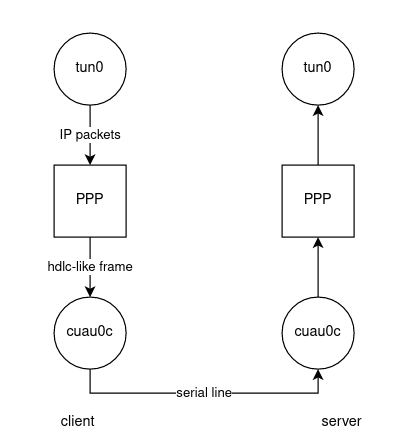
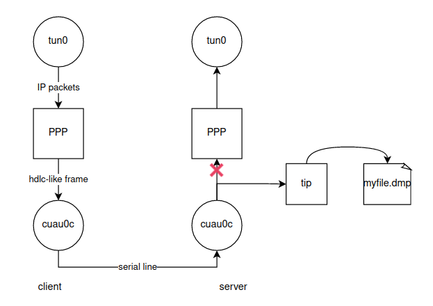

HDLC frame and Wireshark
Wireshark is the best tool to capture traffic (after tcpdump of course) on a network. However the traffic show by wireshark is not always the real one circulating physically. In this article we will see how Wireshark hides the escaping mechanism on HDLC-like protocols and we show a way to actually see the real frame.
1 Brief review of HDLC
High-Level Data Link Control (HDLC) is a protocol used to transmit synchronous data between nodes. It is a layer 2 (data link) protocol according to the OSI model.
In this article we will use HDLC with a serial line between two desktop computers.
NB: A serial line usually uses one pin for transmission and one pin for reception. While this is suitable for a console, it is very not enough for protocols like PPP. This is why a modem is used to be able to accomplish data link.
1.1 Basic Frame
The frame PPP in HDLC-like frame looks like :
+----------+----------+----------+
| Flag | Address | Control |
| 01111110 | 11111111 | 00000011 |
+----------+----------+----------+
+----------+-------------+---------+
| Protocol | Information | Padding |
| 8/16 bits| * | * |
+----------+-------------+---------+
+----------+----------+-----------------
| FCS | Flag | Inter-frame Fill
|16/32 bits| 01111110 | or next Address
+----------+----------+-----------------
According to the rfc1662 :
- Flag Sequence : Each frame begins and ends with a Flag Sequence, which is the binary sequence 01111110 (hexadecimal 0x7e).
- The Address field is a single octet, which contains the binary sequence 11111111
- The Control field is a single octet, which contains the binary sequence 00000011 (hexadecimal 0x03)
- The Frame Check Sequence field defaults to 16 bits (two octets)
1.2 Escaping characters
A very legitimate question rises from the frame. A frame is delimited by two flags : 01111110. What if the information section contains a flag ?
To counter this problem an escape mechanism exists. For example, if inside the information section we have a flag, it is replaced by 0x7d, 0x5e, in hexa. And thus the received frame will contain the stuffing bits that will be removed after reception.
Now, what if the information contains an escaping character ? Well, there is an escaping mechanism for the escaping mechanism. It is well detailled in the rfc1662.
2 Setting up the connection and visualising with wireshark
2.1 Verifying the connection with tip
We are using freebds linux on two computers connected by a serial link.
We open a terminal in each computer and we run :
What we see is that we have a console opened on each PC, lets call them PC1 and PC2. When we write on the console on PC1, it appears on the console on PC2 without writing anything on PC1.
The serial line is well established.
2.2 Setting up and pinging with PPP
We choose one PC to be the server and the other one to be the client.
On the client we use vim to create a file /etc/ppp/ppp.conf containing :
default:
set device /dev/cuau0
set speed 9600
set timeout 0
set accmap 00000000
On the server we create a file /etc/ppp/ppp.conf containing :
default:
set device /dev/cuau0
set speed 9600
set timeout 0
set accmap 00000000
set ifaddr 10.0.0.1 10.0.0.2 255.255.255.255
Now we have set up everything for the PPP to work : the speed, the interface the ip adresses...
On the server we run in a terminal :
A console pop up with a terminal showing three “p” in lower case. Lower case means there is no connection yet.
In this console we write “term”. The console will go in terminal mode and wait.
On the client we run in a terminal :
We have the same console we saw on the server. This time we initiate the connection by writing “open lcp”. The server automatically get out of terminal mode after few seconds. There is a connection, the three “p” are now in upper case.
Now, on both client and server, if we check up with ifconfig we see that we have ip adresses corresponding to 10.0.0.1 and 10.0.0.2.
Client and server can now ping each other.
2.3 Disabling Compression Control Protocols CCP
To increase efficiency PPP comes with some compression protocols. In our PPP console, if we type :
We can see there is a compression protocol called deflate. We want to disable it to see the escaping characters later.
To do that we run in our PPP console :
disable deflate
deny deflate
open lcp
NB: We re-run open lcp to tell the client we disabled deflate.
When we re-run show ccp in our PPP console, we see that we have another compression protocol now : pred1. We need to disable it also :
disable pred1
deny pred1
open lcp
Now if we run show ccp, we see “none”, We successfully disabled compression.
2.4 Seeing the escaping characters with Wireshark and though RTT
To force the system to use escaping characters we just use the -p option in ping :
On wireshark what we see in the ping packet is :
7e 7e 7e 7e 7e 7e 7e 7e 7e 7e 7e 7e 7e 7e 7e 7e 7e 7e 7e 7e 7e 7e 7e 7e 7e 7e 7e 7e 7e 7e 7e 7e
Where are the escape characters ?
There is definately the escape mechanism. It is clear by the RTT alone. A normal ping takes 190ms without compression. The ping with the -p option containing the flag takes 290ms.
Wireshark does not show physical frame. The data are preprocessed by wireshark, sometime the data are preprocessed before even arriving to wireshark.
3 Forcibly seeing the real HDLC-like frame
3.1 Method to see the frame
We still want to see the escaping mechanism in action. Wireshark cannot do it. If we are intelligent enough we can somehow manage to see the frame.
If we want to summarize the mechanism before it will look like this :

Now what happens if the PPP process dies on the server while the client is sending IP packets ?
That what we will be exploiting. We redirected the output to the tip command we saw earlier.
It is like we are cutting a cable and reconnecting it elsewhere.
What we want to do is something like this :

The frame will then be in the file “myfile.dmp”.
3.2 Applying the method
To apply the method we start by pinging the server from the client with :
On the server we kill ppp with :
We simply redirect the output with tip :
We then wait 3 secs to get some traffic. And we can know see myfile.dmp with :
Now we can actually see 0x7d, 0x5e instead of 0x7e.